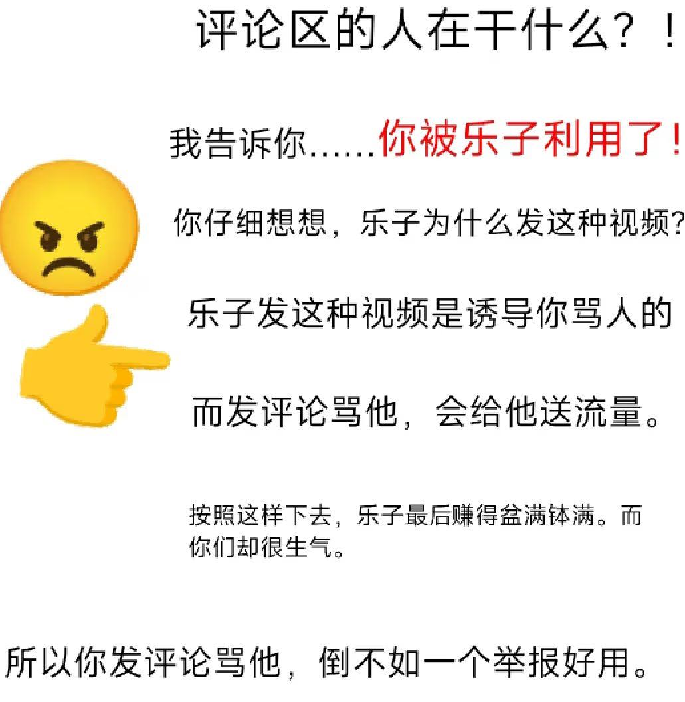
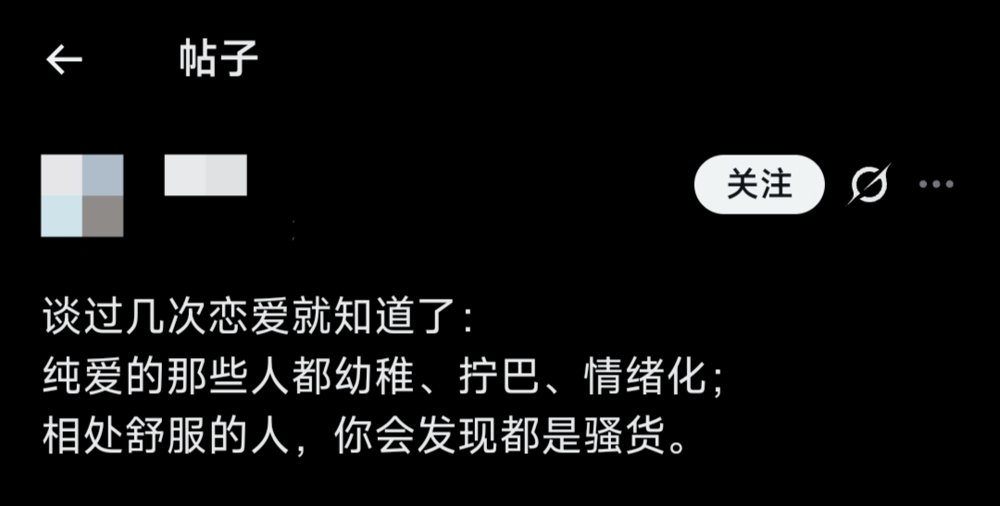

f hv
@fhv932189957574
@luoshuyao 差不多这样，发弱智言论博流量的


洛书瑶
@luoshuyao
这段话好恶心。之前就刷到过，现在有人复制粘贴一下又火了。
谈过几次恋爱就知道了：
把“纯爱”直接打成幼稚、拧巴、情绪化，把“相处舒服”一概归为“骚货”，这就是以偏概全。
舒服不等于浅薄，纯爱也不等于幼稚。真正幼稚的，是把复杂的人性简化成这种非黑即白的标签游戏。 https://t.co/2pSeFYgVit